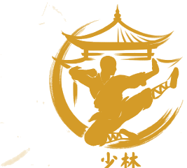

Shaolin Quan Fa: Gong Fu Tradicional, Fortaleza y Rigor Marcial
Enseñanza tradicional guiada por Pablo Encinas, discípulo directo de Shifu Daniel Vera y Shifu Yamila Melillo (32ª Gen.) y bajo el linaje del Gran Maestro Shi De Yang (31ª Gen. Songshan). Cultivo paciente del Gong Fu (功夫) al aire libre en el Mástil del Parque Los Andes (Chacarita, CABA).

Jiaolian Pablo Encinas (Instructor Sede Pechan • Cinturón Negro 2026)
Discípulo de Shifu Daniel Vera (Shi Xing Wu) y Shifu Yamila Melillo (Shi Xing Gong). Instructor a cargo de la Sede Pechan, impartiendo Shaolin Kung Fu y Chen Taijiquan tradicional en el Mástil del Parque Los Andes (Chacarita). Formado formalmente como Terapeuta en Medicina Tradicional China (MTC) articulando biomecánica marcial y preservación de la salud.
Títulos y Diplomas
12º Festival Internacional de Zhengzhou
3º Puesto • Medalla de Bronce (8.60 Pts)
Categoría: Shaolin Xiao Hongquan (小洪拳 - Puño Menor Shaolin). Zhengzhou, Henan, China.
12º Festival Internacional de Zhengzhou
3º Puesto • Medalla de Bronce (8.70 Pts)
Categoría: Traditional Short Apparatus (Arma Corta Tradicional). Zhengzhou, Henan, China.
12º Festival Internacional de Zhengzhou
3º Puesto • Medalla de Bronce (8.67 Pts)
Categoría: Shaolin Yinshougun (阴手棍 - Palo Tradicional Shaolin). Zhengzhou, Henan, China.
II Festival Internacional Shaolin Wushu
3º Puesto • Combate Sanda
Certificado por Shifu Shi Xing Wu, Shifu Shi De Yang y Shifu Shi Xing Gong. Agosto 2018.
II Festival Internacional Shaolin Wushu
Premiación • Shaolin Quanshu (8.40 Pts)
Puño Tradicional Shaolin. Certificado de la Asociación Internacional Shaolin Chan. Agosto 2018.
II Festival Internacional Shaolin Wushu
Premiación • Shaolin Armas Cortas (8.46 Pts)
Demostración y Manejo de Armas Cortas. Certificado Oficial Shaolin Chan. Agosto 2018.
II Festival Internacional Shaolin Wushu
Premiación • Shaolin Arma Larga (8.58 Pts)
Certificado de Premiación de la Asociación Internacional Shaolin Chan. Agosto 2018.
“Fortalece tu cuerpo por dentro y por fuera, fortalece tu mente y tu espíritu; luego, a través de esa fortaleza desterrarás los miedos y solamente sentirás calma, paz y armonía dentro de ti y por lo tanto, hacia todos los que te rodean.”— Gran Maestro Shi De Yang (释德扬)
La Cultura Shaolin: 1500 Años de Armonía entre Mente y Cuerpo
El Shaolin Kung Fu (少林功夫) es el arte marcial del legendario Templo Shaolin que se difundió en el mundo como pilar central de la Cultura Shaolin. Una filosofía completa desarrollada durante más de 15 siglos por monjes y maestros para cultivar la salud, el equilibrio interno y la felicidad.
La Cultura Shaolin preserva un tesoro de disciplinas tradicionales: la meditación Chan (Zen), el arte marcial (Wugong), el Qi Gong, la Medicina Tradicional China (acupuntura y herbolaria), la caligrafía, la arquitectura, la pintura, la música y las artes culinarias.
Significado Doctrinal de los Términos 武功 • 功夫
Nombre marcial original en el Templo Shaolin. Denota la realización y destreza marcial adquirida a través del esfuerzo constante.
Compuesto por Kung (trabajo, desarrollo) y Fu (maduro, sabio, total). Se traduce como «Desarrollo Total» o «Maestría» alcanzada mediante la práctica perseverante en el tiempo.
Término técnico donde Wu significa guerrero y Shu arte. Representa el «Arte Guerrera» en su sentido más elevado de defensa y preservación de la vida.
Pilares del Entrenamiento e Integración Chan Wu
La fusión perfecta de meditación silenciosa y fuerza marcial en movimiento.
Desarrollo Físico Completo
Fuerza, flexibilidad, resistencia, potencia y destreza. Preparación rigurosa para formas de mano vacía, manejo de armas tradicionales (largas, cortas y flexibles) y aplicaciones de defensa personal.
Fortaleza Mental y Meditación
Cultivo de la serenidad, la concentración profunda, el equilibrio emocional y la compasión. Combina la meditación en acción marcial con el zazen (meditación sentada en silencio).
Los 5 Estilos Tradicionales (Jue Yuan)
- Dragón (龙): Cultivo del Espíritu (Shen).
- Tigre (虎): Fortalecimiento Óseo.
- Leopardo (豹): Desarrollo de la Fuerza.
- Serpiente (蛇): Circulación del Qi (Energía Vital).
- Grulla (鹤): Elasticidad y Tendones.
El Templo Shaolin y la Herencia de Bodhidharma
Fundado en el año 495 en la montaña Songshan por el monje indio Batuo como santuario imperial, sus primeros discípulos marciales fueron Hui Guang y Seng Chou.
Treinta años más tarde, llegó Bodhidharma (Dámó 达摩), Primer Patriarca del Budismo Chan. Al ver a los monjes débiles por largas meditaciones, les enseñó los 3 métodos de Qigong fundamentales: Yi Jin Jing, Xi Sui Jing y las 18 Manos de Lohan (Shi Ba Lohan Gong).
Estas 18 posturas iniciales evolucionaron a 72 técnicas, alcanzando 170 movimientos en la Dinastía Yuan y la integración de armas tradicionales en la Dinastía Ming, consolidando a Shaolin como la cuna de las artes marciales del Lejano Oriente.
Dámó (Bodhidharma)
Primer Patriarca del Budismo Chan en China
Horarios de Clases & Práctica al Aire Libre
Práctica en el Mástil del Parque Los Andes (Chacarita). Clases impartidas en la naturaleza para la salud física, mental y energética.
Shaolin Kung Fu (Adultos)
Posturas tradicionales (Bu Fa), acondicionamiento de tendones, formas clásicas (Taolu), bastón (Gun) y combate tradicional.
Kung Fu Infantil
Desarrollo psicomotriz, disciplina consciente, juegos pedagógicos tradicionales y respeto ético (Wu De) para niños y jóvenes.
Chen Taijiquan & Qi Gong
Espirales de seda (Chan Si Gong), forma antigua Laojia Yi Lu, respiración Tu Na y cultivo energético en el Dantian.
Atención con MTC
Acupuntura tradicional, moxibustión, masaje clínico Tuina, ventosas y fitoterapia. Diagnóstico de pulso y lengua individualizado.
Empieza tu camino en el Kung Fu tradicional en Chacarita
Supervisión técnica personalizada guiada por el Jiaolian Pablo Encinas.
Preguntas Frecuentes sobre la Práctica
Pautas esenciales para tu inicio formativo en el Mástil del Parque Los Andes.